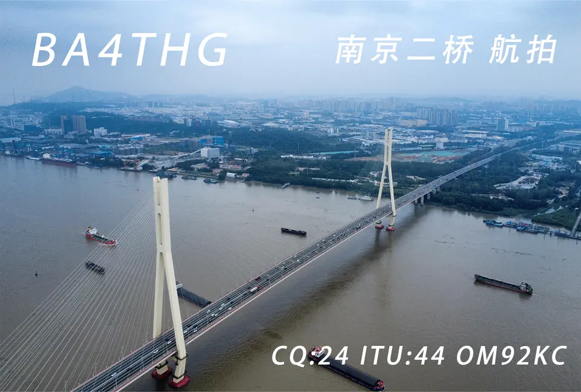
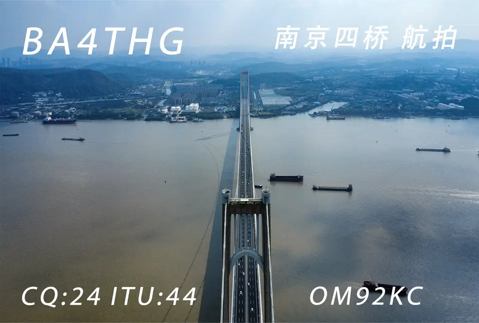
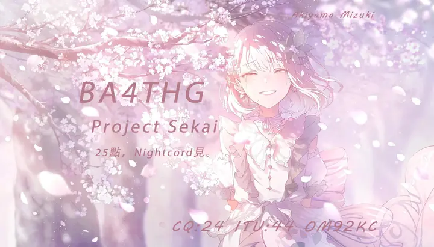

AMATEUR RADIO · NANJING
把每一次通联，
留在一张卡片上。
这里收录 BA4THG 当前拥有的 QSL 卡面。城市、角色与音游主题，都来自不同阶段的兴趣与记忆。
浏览全部卡面- 10
- A 面设计
- 2
- B 面设计
- BA
- 中国业余电台



卡面档案
点击任意卡片查看大图。筛选只改变当前视图，不会隐藏你的原始文件。
当前分类还没有卡面。
BA4THG / 01
关于这个档案
QSL 卡片是通联记录，也是个人电台的视觉名片。这个页面只展示已经完成的卡面，不把 PSD 工程文件公开到网页中。
- 呼号
- BA4THG
- 主要活动地
- 南京
- 设备
- 泉盛 UV-K5 / Yaesu FT-1907R / Yaesu FT-1900 / Motorola GM3688
- 天线
- 设备原装天线 / 华鸿 1.2 m 玻璃钢天线 / 2.2 m 玻璃钢天线 / 老鹰 SRH-771
- QRZ
- 查看 BA4THG 主页